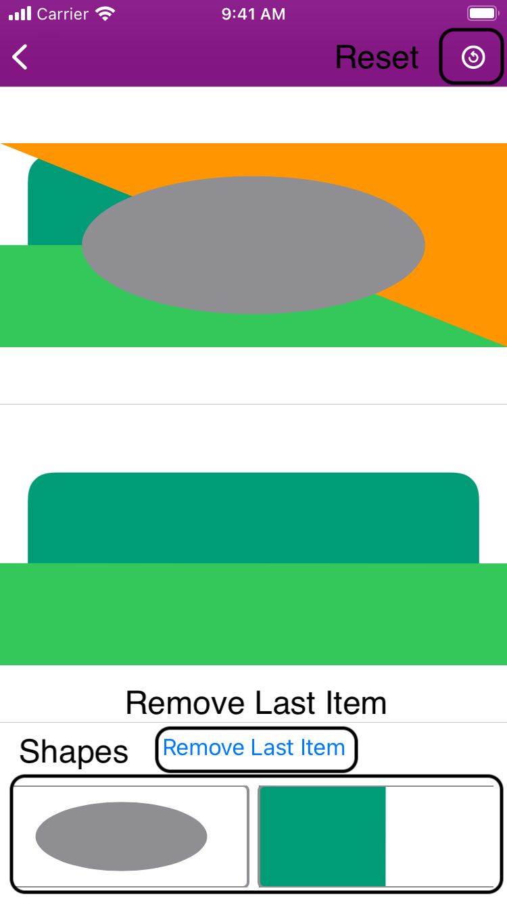

Spatial Stacker helps young children develop spatial awareness by locating unique shapes and stacking them up to match the given image. Three levels of difficulty are available, increasing the amount of stacked shapes to assemble.
There are several features available to you during gameplay
If you line the correct shapes in the right order, you will see a new screen appear, showing the completed image. After several seconds, this goes away and a new question appears.
There is no end point for the questions, so you can do 2,3, 20 or 200. Just stop when you want.